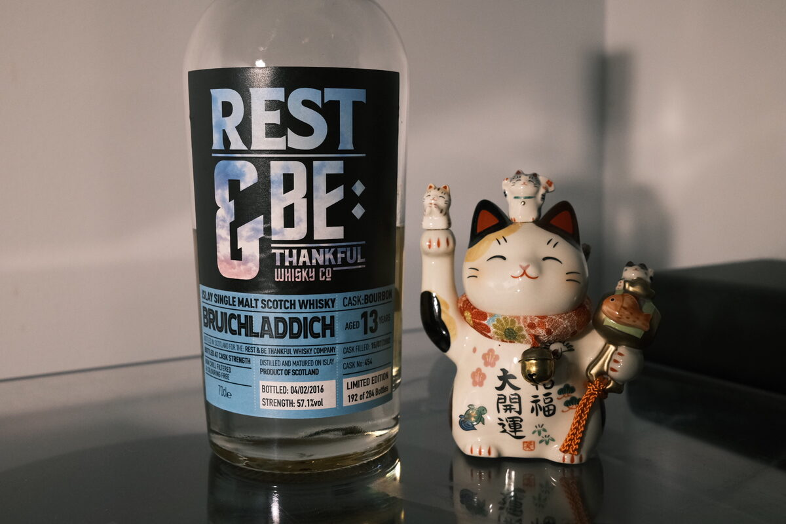

Bruichladdich 2002 Rest & Be Thankful 13 years 57.1% (exbourbon)
A couple of early neo-Laddie bottles today, both from Rest & Be Thankful. Distilled in 2002, just after the distillery’s reopening in 2001. Bottled 2016 from cask 454.
Colour Straw gold.
Nose Pencil shavings, erasers, playdough. Sweet milk and lactic funk – Yakult? Laddie funk. Biscuits and brine. Some sweet vegetal notes, shredded carrot. Overripe fruits. Butter. Chilli, white pepper. A lot of heat on this nose. With water, a little floral.
Palate Very sweet and very spicy. Malty. Alcohol covers any nuance… surprising, it’s not even close to an undrinkable ABV – not well integrated. With some water, turns into something more recognisably Bruichladdich – floral notes, honey, but the texture goes. There’s a surprising amount of astringent oak.
Finish Vanilla and soft salted caramel cookies. Cinnamon cream that hangs in your throat. With water, buttery, floral flavours come to the fore. A hint of smoke?
Comments Disappointing. This one really needs a lot of time to breathe. It’s a shame, there’s a good malt somewhere hiding under the alcohol, but you need a lot of time and water to “dial it in”. So much potential, but not my first choice. 79/100.

Posted by Dominic on 07 May 2021